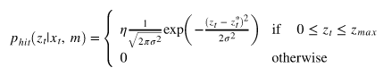
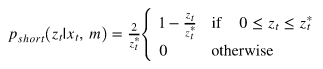
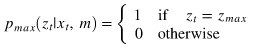
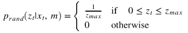
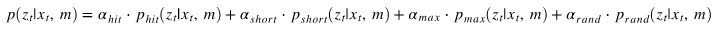
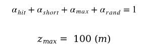

Lab 5
Brief: lab5_brief.pdf Lab 5 Briefing SlidesRSS Lab 5 Report: Localization
Kevin Carlson, Susan Ni, Talia Pelts, Jonathan Samayoa, Vlad Seremet
Overview & Motivations
Kevin
The purpose of this lab was to employ localization on the robot, which determines the position and orientation of the robot. This takes odometry, lidar and map data to approximate the robot’s pose in the map. In order for our localization to function properly, we implemented models in the simulator to calculate the robot’s probable position and orientation.
We started the lab by implementing our theoretical motion and sensor models. The motion model uses odometry data, or data from motion sensors on the robot, to estimate the possible pose of the robot. The sensor model uses lidar scans and probabilities to return points that represent the robot’s possible prose. The particle filter combines these models to yield more probable estimates of the robot’s pose. After testing these models in the simulator, we ran the implementation on the robot to assess the results.
Being able to determine our robot’s position and orientation in a map is important because it helps us to pinpoint a fundamental piece of information about the robot. Without the pose of the robot, it is difficult to implement robust path planning algorithms and perform other tasks effectively. While
Proposed Approach
Technical Approach
To determine the robot’s position and orientation in an environment, we implemented Monte Carlo Localization (MCL) because it allows for global localization and does not require landmarks in the map. The basic idea behind MCL is to represent the robot’s pose belief as a set of particles with associated probabilities. The pose of the particles are updated via a motion model and the particles are resampled via a sensor model based on their probabilities. The two processes combined create the MCL particle filter.
- Motion Model
- Sensor Model
- Probability of detecting a known obstacle in the map:
 - Probability of a short measurement (this can happen due to many factors, including scratches on the lidar and people walking near the robot):
 - Probability of a very large measurement (this can occur when lidar beams hit an object with strange reflective properties, or when our robot goes down a very long hallway):
 - Probability of a completely random measurement:
 - Particle Filter
Susan
Every time the robot receives wheel odometry data based on its movement, the pose of the particles have to be updated using the same odometry data. If the particles were at the ground truth pose of the robot, this would ensure the particles travel with the robot as it drives. In our implementation of the motion model, each particle is represented by an array containing its x position, y position, and orientation with respect to an arbitrary world frame. The odometry data is represented by an array containing the change in position and orientation dx, dy, d with respect to the robot’s frame. By using dead reckoning, the particles’ poses can be updated with this odometry data.
However, since the odometry data is not in the same coordinate frame as the particle poses, a coordinate frame transformation has to be made. The odometry position data can be rotated into the constructed world frame by multiplying by a rotation matrix where the angle of rotation is the orientation angle dof the odometry data. Since matrix multiplication is slow, the process can be deconstructed into these formulas which can be vectorized to make the computations faster:
After the frame transformation, updating the poses of the particles simply becomes adding the new dx, dy, and the original dto the particles’ x, y, and , respectively.
Jonathan
The sensor model helps us determine how likely a given sensor reading is from our particles given the ground truth distance from the robots lidar. We are able to use this to determine the likelihood that a particle accurately models the robot (if the probabilities we calculate for a given particle are high, then it is very likely that the particle is in a very similar place and orientation as our robot). This lets us get rid of particles that we deem do not represent the car accurately.
We used the following cases for our lidar model:
These four distributions are now combined, via a weighted average, as follows:
Where,
Finally, because our sensor model uses various distributions and is computationally intensive, we precomputed the model, as can be seen in the graph, and created a look-up table that is loaded into our program. This way, we will not have to perform the entire computation for every particle’s beams, but instead simply look up an approximation to the probability in our table.
Susan
The MCL particle filter is a combination of the motion model and the sensor model. Every time the robot produces odometry data, the particle filter updates the pose of the particles via the motion model. Every time the robot receives laser scan data, the particle filter updates the probabilities assigned to the particles via the sensor model and then resamples the particles based on these new probabilities to produce a new set of particles that represent the most probable pose of the actual robot.There were some adjustments we made to our particle filter that made it more robust to noise and race conditions. The most notable addition was that we smoothed out the probability distribution of the particles by raising all of the values to a power less than 1. This helped prevent getting stuck in local minima when trying to converge to particles that had the highest probability of representing the true robot pose. Additionally, we added a lock that could be acquired and released by all of the functions that modified or updated our array of particles. This allowed us to prevent the race condition that would occur if two separate threads tried to update the particles at the same time. We also add noise to the odometry data to allow the particles to spread out in the environment, or else they would all converge to a single point.
Experimental Evaluation
Talia
We measured the success of our particle filter in the simulation by comparing the average estimated pose of the robot determined by the particle filter and the pose provided by the odometry data. In this case, we were able to treat the odometry data pose as ground truth because there was no drift in the simulation. The average estimated pose of the robot was computed by taking the arithmetic mean of the x and y positions of the particles and the circular mean of their angles. We then opened the simulation and plotted the x, y, and theta error. As predicted, when we would first move the robot, we would see a spike in all three error quantities. Eventually, however, the particle filter would converge to the true location of the robot, sending error quantities to 0. Convergence time depended on where in the simulation the robot was placed. In the data in Figure 5, we see an approximate convergence time of 5.5 s in 5a and an approximate convergence time of 2.7s in 5a.
We further analyzed our convergence rate by measuring the time to convergence of our robot as an effect of click distance, since a greater click distance would lead to a longer time until convergence. Figure 6 indicates that our convergence time increased with click distance. Over the course of 22 trials, we measured click distance by observing the initial error spikes in x and y (as shown in the first rows of Figure 5) and measured the time until error rates were within 0.05 meters. For each trial, we calculated the ratio of click distance to convergence time. We calculated a average rate of convergence of 3.108 meters per second. Over all trials, we had an average convergence time of 1.99s.
Lessons Learned
Kevin
The team identified two main lessons learned over the course of this lab. First, it is important to ensure that our code does not return nan/inf or erroneous values from flaws in Python implementation, such as using integer divide instead of float divide or taking fractional powers of negative values. For example, we encountered the integer divide issue when calculating weights from normalizing particle probabilities. By accounting for these technicalities in implementation in the future, we can avoid theses problems entirely, saving the team valuable time.
We also learned that taking a systematic approach to debugging saves time versus randomly looking for bugs. Initially, we searched for bugs by quickly reviewing the code and attempted to infer where the error might be happening. This seems like the quickest way to resolve bugs, but it instead just makes it more difficult and time consuming to fix the code. Such superficial code reviews do not identify the number of errors in addition to where those errors occur. Since the code has multiple modules that must all function independently, turning off modules one at a time allow us to pinpoint any bugs. For example, when attempting to find the bug caused by integer divide as mentioned earlier, we turned off the sensor model to confirm that the our motion model was not the issue, allowing us to have a more targeted approach to finding the bug. Furthermore, testing individual functions and modules against known values before the final implementation helps to find and understand logic errors in our code. In the future, we will be sure to take a systematic approach to debugging our code in order to save time and achieve better results.